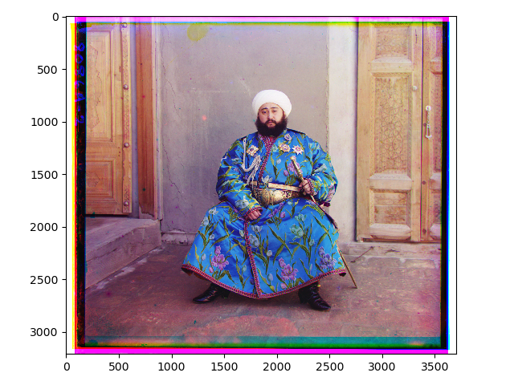
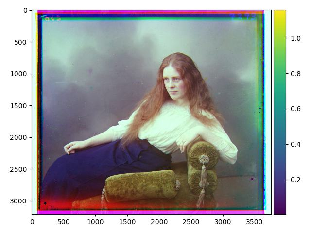
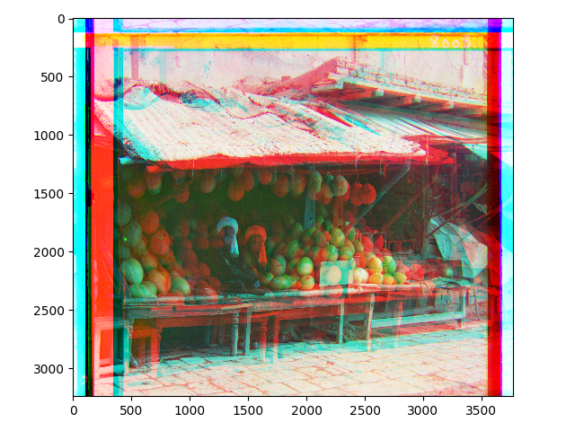
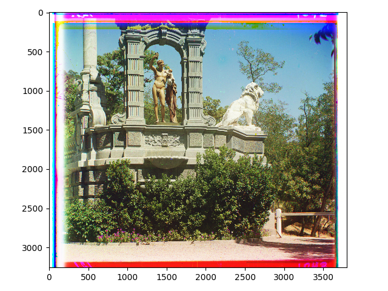

Back to All Projects
CS 180 Project 1 Report
Aathreya Kadambi
This project is right up my alley, definitely super excited!
Table of Contents
- Initial Results: Single Scale Version
- Better Results: Pyramid Processing
- Extra Credit
- Log
Initial Results: Single Scale Version
Here are some of my results from the single scale version of my processing:
These were obtained for the .jpg images in my image directory. Clearly, they look gorgeous. It's honestly amazing that these exist, it's so awesome that Prokudin-Gorskii managed to make this possible. Now I can truly believe the claim that the world used to have color before the 1900s.
Better Results: Pyramid Processing
With pyramid processing, I was able to obtain faster results still using SSD error, and by noticing that the sensitivity to green light might be higher and as such, simply aligning with green instead of with blue, I was able to achieve the following results which I think are very good for how simplistic they were:


 I think these outputs look good, with fairly good resolution. Please see my log below for more information about the process it took to get these outputs!
Here are a few other images of my choosing:
These all look very pretty. The first one shows a column with murals on it, the second one is an amazing picture called Na Dunaie (might be getting the accent wrong), and the last one shows a cotton textile mill interior with machines. Overall, pretty good results in my opinion, they match pretty closely to the digital composites on LoC.
I think these outputs look good, with fairly good resolution. Please see my log below for more information about the process it took to get these outputs!
Here are a few other images of my choosing:
These all look very pretty. The first one shows a column with murals on it, the second one is an amazing picture called Na Dunaie (might be getting the accent wrong), and the last one shows a cotton textile mill interior with machines. Overall, pretty good results in my opinion, they match pretty closely to the digital composites on LoC.
Skip to the results: Teleport!
While my images were pretty good, when comparing to the ones on LoC, I noticed that there are usually two versions of composites on LoC. For example, for Na Dunaie:
- Check out this version of Na Dunaie on LoC. This one looks a lot closer to what I got, although with a bit more contrast. In fact, I'd argue that my results also had areas in which they were better. For example, observe the left most houses in the composite on LoC. There are clear issues where the red component of the image is offset with respect to the blue and green ones, which isn't as much of an issue in my output.
- Check out this other version of Na Dunaie on LoC. This one is much better. The water and sky look amazing. That being said, I think they would have had to make some assumptions about the image in order to get this, and probably had to do some manual changes. For example, the three streaks from the original image are not present in this one, and glaring issues on the boundaries (even including stray marks) seem to have been removed.
I think the most important consideration to make is that in the first version of the image from the LoC whcih was closer to my output and was likely made automatically, there seems to have been more contrast. In particular, the three streaks are visible in the LoC version whereas they aren't in mine. Of course, I'm not particularly a fan of the streaks, but maybe it would be interesting to try and automatically determine white balance or contrast or something else along these lines.
But visually, I find the more refined versions of the photos better, regardless of whether or not they are completely realistic. At the end of the day, anyway, I think photos are for enjoyment, making good points, and storing memories. So if it makes the photo a bit more visually appealing while preserving the ideas and memories in the photo, I think it's worth it.
Analyzing Channel Distributions
For this discussion, I'll be looking at the Na Dunaie photo. Let's look at the channel distributions for both my image and the refinement on LoC:
The first most glaring thing you might notice is the scale of the x-axis, with one being from 0 to 1 and the other from 0 to 255, but this is just based on how each one is stored, and isn't as significant as the general shape of the graph. The shape is much more interesting: we can see that there is a clear difference, and in fact, the LoC distributions appear to be much more like a sum of Gaussians plus some added noise, or at the very least, it's much more smooth in the statistical sense (check out my blog post on this lol). The general features of the two distributions are similar (which makes sense since they are the same photo), but they are clearly very different.
So here's one thing we could try: let's smooth out the color distributions (for example using something as simple as a moving average filter) and then sample based on rank or percentile from the new density. I think while the general shapes look Gaussiany in the second distribution, we won't have to manually do anything for this, it's probably just based on how colors end up appearing in nature, and how light, shadows, and blending happen.
As a remark, mathematically I think it makes sense to use a moving average filter because it roughly preserves the total sum of the array, so that when we apply it to a distribution, the result will be a distribtution with roughly the same mass.
These were my results initially:
To be honest, not very appealing... it doesn't look that different from my original result! Looking at this, I realize that the real issue might be more that the green channel isn't strong enough, and maybe also the blue channel. Manually amplifying these two channels and forgetting about my previous "refinement" process, we see the following:
To me, this looks more effective. This motivates studying how to amplify or shift the distributions, more than just make them more smooth. But more than that, I was hoping to find some sort of metric to identify what makes this image look better. Visually, it looks more balanced. For example, the first image looks more "purple" everywhere, whereas this one does not appear to be as purple.
To get a better understanding of this, I decided to try analyzing just Hue plots:
Looking at this one, the hue distibution looks a bit weird... it definitely looks digitally edited. From these images though, it's still hard to tell if we can fix the images just with modifiying hues. Because of the scaling on the different graphs, it's difficult to tell.
To be honest, that all didn't end up being as illuminating (haha, get it?) as I thought it would be, so I thought I'd go back to looking at the channels. What if we match the channel means? By this, what I mean is that I would take the mean of the distributions for each channel (red, blue, and green), and scale each of the distributions to have the same mean. What mean should I choose? I decided to take the geometric mean of the means of the channels, and then scale each mean individually to that geometric mean. This ended up working surprisingly well, which you can see in the results section. I chose the geometric mean after tring arithmetic mean, and deciding that it might be better to take a lower mean (keeping in mind the QM-AM-GM-HM inequality, for example).
Results
I could have gone a little bit farther to fix the light clipping and shadow clipping, where things are out of range after my scaling, but because of time constraints, I decided to stop and be satisfied with my current results:

 I think in some cases the old version was better, but in others, the balance of the newer version (right) are better. For example, in both images with the combination of the water bodies and the sky, I really like the right side much more. On the other hand, with the lady, the newer image seems a bit drained of warmer colors, and I can't tell if that's good or bad. Overall, I guess whether or not we would like this balance is dependent on the scenario, but there certainly is a positive difference in some cases.
I think in some cases the old version was better, but in others, the balance of the newer version (right) are better. For example, in both images with the combination of the water bodies and the sky, I really like the right side much more. On the other hand, with the lady, the newer image seems a bit drained of warmer colors, and I can't tell if that's good or bad. Overall, I guess whether or not we would like this balance is dependent on the scenario, but there certainly is a positive difference in some cases.
Log
3d. Back to SSD metric, very simple fix by accounting for color sensitivity.
In the end, I was actually able to fix any remaining issues, even with just SSD error, just by trying something a little questionable: I know that the human eye is less sensitive to red and blue light, and more to green light. So instead of aligning to the blue light, which maybe we are least sensitive to, I decided to align to green light. This actually seems to work with the emir image! :D Check it out:
3c. Implemented the pyramid scheme alignment method and a new metric.
Here are the photos so far:


These are with the SSD metric; the NCC one still doesn't seem to wook too well. Most of the images look pretty good here, except for two: Emir and Melons. This motivates looking at those two to see what makes them different from the rest, and maybe devising a new metric for them.
3b. Modified Single Scale Method to Accomodate for Pyramid Processing
I had to change my single scale method so that I could choose the center of the range of offsets that we were trying. Instead of just trying offsets between -15 and 15 for example, we can then use the downscaled version to choose a starting point and choose offsets from there in the larger image. Again, nothing much to see here, but you can see the results above.
3a. Implemented upscale and downscale methods for upscaling and downscaling by a factor of 2.
I don't have much to show here but based on my basic testing, these methods seemed to work fine! Check out some of the points above for more results.
3. Implemented Pyramid Processing and found small error in previous code.
Check out one of the subparts above to see some intermediate results!
2b. Started making a new error method to only use error from center of image, but in the process found an error with original error function.
After finding the error, I realized that even without the border, I was able to achieve this not so bad output:
At the very least, it's better than my output after 2a initially. I though I should still go on with the other error method though that only takes the center of the image, so I also go this image with that:
This is much better, although it still has many issues. One thing to keep in mind though is that I'm using np.roll, which is potentially problematic because it actually moves the top part of the image to the bottom, but I just did it this way as a quick way to work with everything without having to worry about the size of the image. In any case we'd have to cut off portions or the size of the image would change when shifting, so roll isn't so bad since we can always just visually ignore the borders. Here are some other images which look pretty decent now:
Those are the three .jpg files. Trying this method on the .tif files, which are larger, though, takes more time. For example, church.tif gets processed into:
but this is still not too good since we aren't searching a large enough amount of offsets, and even now it takes a long time because this is a larger image. We'll have to upgrade to add on the pyramid processing.
2a. Coded up a method to select minimal error over a window
This yielded the following output:
Inspecting what happened, it looks like the offset with minimal error is just no offset. However, checking my offset method seems to show that it works as expected. I think a solution will be to not count the borders for error, and only count the center of the image.
2. Tried SSD distance between images with manually inputed window
Check out some of my steps above to see examples of output at this stage!
1. Started Project
You can use these dropdown arrows to check out what happened at each step!